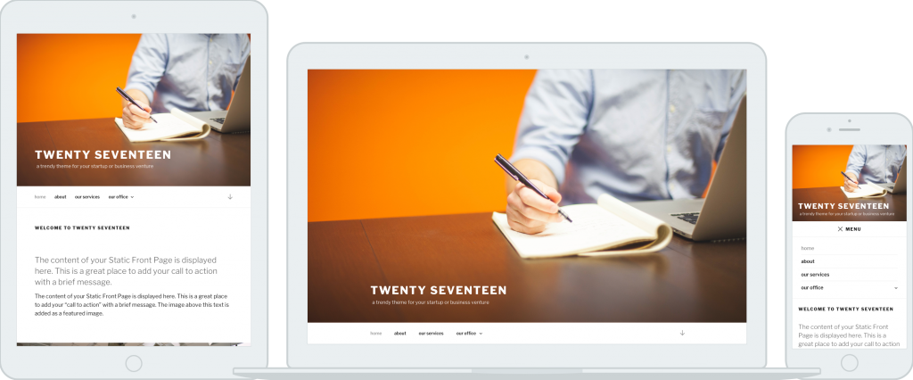
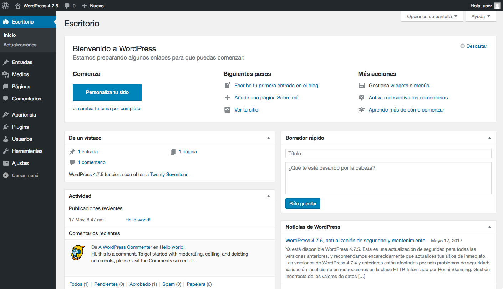
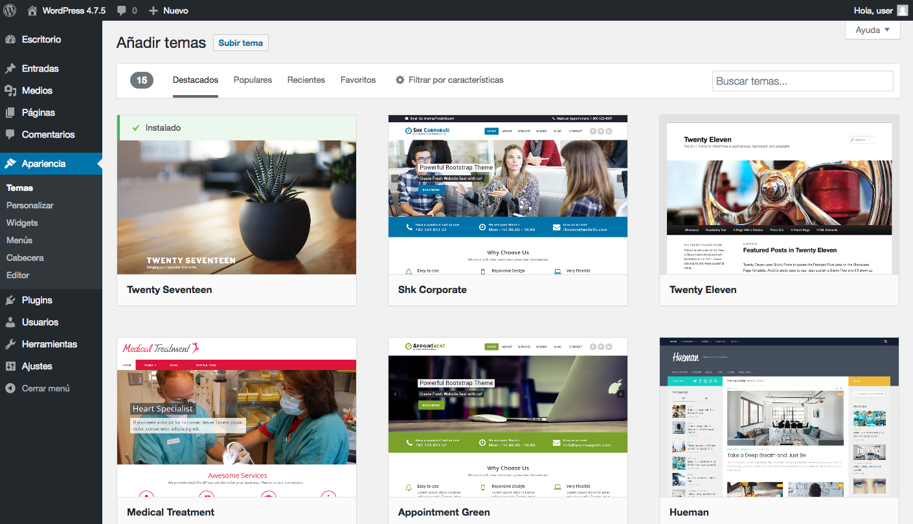
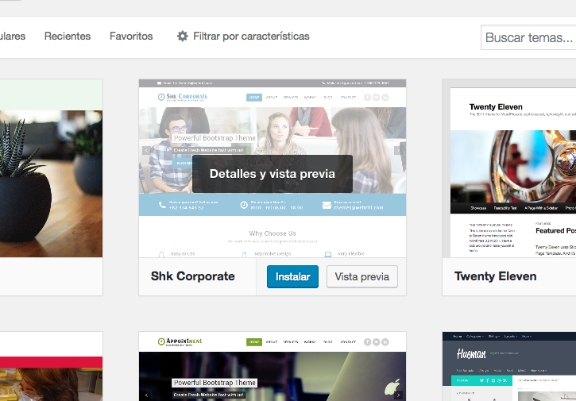
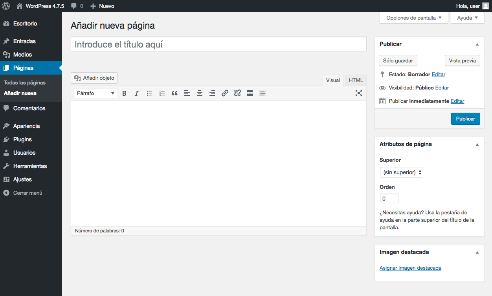
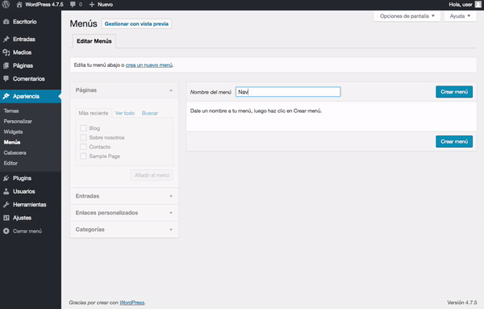
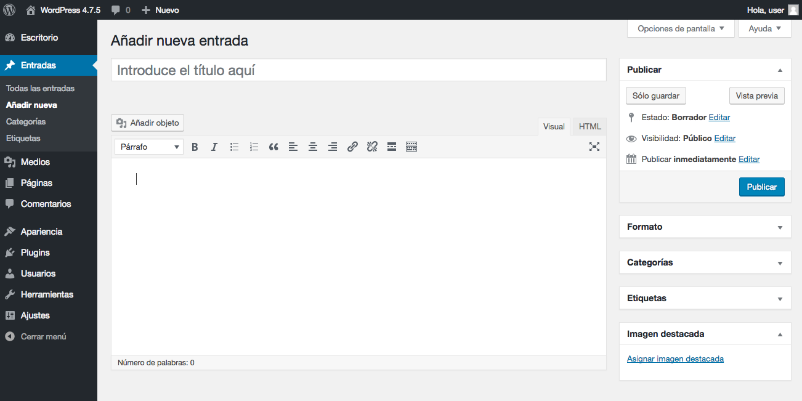
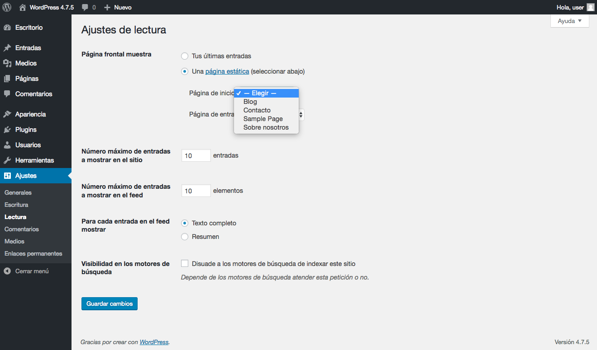

Paso 1: Elige la tecnología
Lo primero que hay que hacer para crear tu sitio es decidir qué tecnología quieres usar para construirlo. A qué me refiero con eso? Originalmente los sitios web son creados a base de código (HTML y CSS), que es lo que los programadores utilizan para programar una página web desde cero. Actualmente, ya existen plataformas llamadas Sistemas de Gestión de Contenidos ( CMS por sus siglas en inglés ) que hacen que lanzar y administrar el contenido de tu sitio web sea muy fácil!
Las plataformas más utilizadas para construir sitios web en la actualidad son WordPress, Joomla y Drupal, de estos, WordPress es el más utilizado, solo considera que más de la mitad de todos los sitios en Internet estan construidos con WordPress, al rededor de 15,886,000 sitios, ¡esos son muchos sitios!
¿Por qué un CMS y no Wix o algo similar?
Claro, podrías crear tu sitio con un builder como Wix o SquareSpace, pero WordPress es simplemente la mejor opción para principiantes por las siguientes razones:
-
Es totalmente GRATIS
WordPress es una plataforma gratis de descargar, instalar y usar. No hay que pagar licensias ni membresías. Además cuenta con una comunidad enorme que crea plantillas gratis, lo que hace casi imposible que haya dos sitios iguales en la web corriendo WordPress.
-
Es muy fácil de usar, perfecto para principiantes
Administrar un sitio con Wordpress es tán sencillo como usar Microsoft Word. Puedes agregar texto e imágenes fácilmente, y si quieres funcionalidad extra existen "Plugins" que te permiten agregar practicamente cualquier funcionalidad a tu sitio web, desde botones para compartir a redes sociales hasta formularios para suscribirse a tu sitio.
-
Es flexible y se adapta a tus necesidades
Puedes crear desde un landing page para tu Startup, hasta sitios enormes con cientos de páginas y miles de visitas. Compañías como Sony Music, Mercedes Benz, Walt Disney y celebridades como Beyonce y Katy Perry usan WordPress para administrar sus sitios.
-
Existe una comunidad enorme lista para ayudar
Gran parte del éxito de WordPress es la comunidad detrás del CMS. Es muy fácil encontrar respuestas a algún problema, ya sea en su página de soporte, o con una búsqueda en Google.
Si después de buscar aún tienes dudas, me puedes contactar enviándome un correo a hector@creaunapaginaweb.com o a través de mi página de Facebook, y con gusto de apoyaré.
Hay más opciones para crear tu página
Si WordPress no te convence, no hay problema, puedes intentar crear tu sitio con un builder como Wix o SquareSpace. Si te interesa, las próximas semanas estaré publicando más guías para crear sitios web con HTML/CSS, Drupal, Joomla, Wix y SquareSpace. Para ser de los primeros en recibirlas te puedes suscribir a mi lista.
Paso 2: Elige un dominio y proveedor de hosting
Si decidiste quedarte con WordPress, perfecto! El siguiente paso es conseguir tu dominio, que es la dirección que quieres usar para accessar tu sitio en internet (misitio.com), y el hosting (hospedaje web), que es en donde se va a hospedar tu sitio para poder mostrarlo a través de tu dominio.
A pesar de que WordPress es gratis, hay que pagar por tener un dominio y hosting. Descuida, en esta guía te muestro como puedes conseguir tu hosting a menos de lo que te cuesta un café :)
¿En dónde puedo conseguir un dominio y hosting?
La opción que a mi y a varios clientes nos ha funcionado ha sido Godaddy. Tienen un sitio dedicado a México, y también puedes esperar soporte técnico en Español.
Su paquete de mejor valor cuesta $121 si pagas 3 meses por adelantado, y te regalan tu dominio, pero el propósito de esta guía es apoyarlos a crear su sitio web bueno, bonito y barato :) así que puedes aprovechar la oferta que logré conseguir para ustedes:
Dominio + Web Hosting por un año por $18.99/mes si pagas 12 meses
Si ya tienes un dominio y hosting, puedes saltarte al Paso 3, para comenzar a crear tu página web.
¿Cómo sé qué dominio elegir para mi sitio?
Lo primero que hay que saber es si tu sitio va a ser para una compañía o marca o si va a ser un sitio personal.
Si va a ser un sitio para una compañía o marca, entonces te recomiendo que tu dominio sea NombreDeTuEmpresa.com.
Si va a ser un sitio personal para mostrar tu portafolio, o solo un blog, entonces te recomiendo que tu dominio sea TuNombre.com.
Otros puntos a considerar para elegir tu dominio son:
-
No uses números, guiones, eñes, acentos o cualquier otro signo
No les hagas el trabajo dificil a tus usuarios. Mientras más fácil sea de escribir y recordar, será mucho mejor. No quieres estar explicando o deletreando tu dominio cada vez que alguien te lo pregunta.
-
Siempre intenta ir por el .com
Si este ya está registrado, entonces reconsidera el dominio a elegir, o elige una extensión del país (.mx para México), .net o .org. Evita usar extensiones como .xyz, o .club, ya que aún no están popularizadas y podría ser muy dificil para tus usuarios recordar el dominio con esa extensión.
-
¿Es fácil de pronunciar?
Asegurate de que cualquiera pueda pronunciar el dominio. Si quieres usar acrónimos, dilos en voz alta para asegurarte que es una buena opción, o dime si podrías decir gwdswv.com?
Paso 3: Instala y personaliza
Ya tienes tu dominio, y ya contrataste tu hosting, ahora es tiempo de crear y lanzar tu sitio web!
Instala WordPress
Existen dos maneras de instalar WordPress en GoDaddy, manualmente o con el Instalador, que lo hace todo por ti. Aquí vamos a explicar la segunda opción.
- Entra a tu cuenta de Go Daddy.
- Da click a Web Hosting.
- A un lado del nombre de la cuenta de hosting da click en Manage.
- En la sección de Apps populares, da click en WordPress.
- Da click en Instalar.
- Completa los campos que a continuación te aparecen:
- Dominio — Selecciona el dominio que quieres usar.
- Directorio — Esta es la ubicación donde se instalará WordPress, asegurate que solo esté "/".
- Especifica un Usuario, Contraseña, verifica la contraseña y un Correo electrónico
- Da click en OK
Elige un tema/plantilla para tu sitio
Una vez instalado WordPress podrás ver un sitio funcionando en tu dominio, lo que verás es un Tema o Plantilla de WordPress:

Este es la apariencia que todos los sitios de WordPress obtienen a la hora de ser instalados. No te preocupes, no tiene que quedarse así. Como mencionaba antes, existe una comunidad enorme de gente creando plantillas para Wordpress. Para instalar un tema diferente:
-
Visita tu Escritorio
Para entrar a tu escritorio vas a http://tusitio.com/wp-admin (reemplaza "tusitio.com" con tu dominio) y esto es lo que verás:

-
Visita la lista de Temas
Una vez en tu Escritorio, da click en "Apariencia" >> "Temas" y en la parte de arriba de la pantalla que aparece da click en el botón "Añadir Nuevo". Esto es lo que verás a continuación:

-
Instala el nuevo Tema
Puedes darle Click a "Vista Previa" sobre un Tema que te interese para verlo a pantalla completa y ver si en verdad es lo que quieres.
Una vez que encuentres el Tema que quieres dale click en Instalar y tu sitio ahora tendrá ese nuevo Tema.

Cómo añadir páginas y contenido
Ahora que tienes tu Tema instalado, puedes comenzar a agregar páginas y contenido a tu sitio web.
Añadir y editar páginas
Para añadir una página nueva, en el menú del lado izquierdo busca la opción que diga "Páginas" y da click en "Añadir nueva". Verás la siguiente pantalla, donde podrás especificar el título de la página y dentro del editor podrás añadir texto e imágenes tal y como si estuvieras usando Microsoft Word.

Añadir páginas al menú de navegación
Del menú de lado izquierdo busca la opción de Apariencia y da click en Menús. Una vez ahí:
- Dale un nombre al menú que vamos a crear y da click en el botón de Guardar menú
- Del lado izquierdo de la pantalla, habrá una lista de las páginas creadas en tu sitio, selecciona las páginas que quieras agregar al menú que acabas de crear y da click al botón de Añadir al Menú. Las verás aparecer del lado derecho de la pantalla.
- Acomoda las pantallas en el orden en el que quieres que aparezcan en tu menú de navegación.
- Selecciona la opción de Menú Superior para asegurarnos que el menú que acabas de crear sea el que se muestre en la parte superior de tu página web.
- Da click en Guardar menúuna vez más para actualizar el menú con los últimos cambios.

Agregar artículos a tu Blog
Si tu sitio cuenta con un blog, entonces vas a querer agregarle "Entradas". Para esto del menú del lado izquierdo busca la opción de Entradas y da click en Añadir Nueva, verás la siguiente pantalla, donde podrás especificar el título de tu Entrada, agregar contenido y seleccionar una Imagen destacada, que es la imagen que se muestra en tu blog para cada artículo.

Establecer la página principal
Si tu sitio no es solo un blog, y quieres que una de las páginas que creaste sea la primera página que tus visitantes vean:
- Del menú izquierdo busca la opción de Ajustes y da click en Lectura
- Selecciona la opción de Una página estática y de la lista de Página de inicio: elige la página que quieres que se muestre como tu página principal
- Da click en el botón de Guardar cambios

¡Felicidades! Ya está listo tu sitio
Si seguiste la guía entonces ya tienes tu sitio listo para que lo comiencen a visitar. Me encantaría ver el resultado de tu trabajo, si estás de acuerdo, puedes compartirme tu sitio enviándome un correo a hector@creaunapaginaweb.com o un mensaje a través de la Página de Facebook
Si te sirvió esta guía, por favor compartela dando click en los botones de abajo, para que otras personas la puedan usar. Y si tienes alguna duda o algún comentario para mejorar esta guía, no dudes en contactarme.